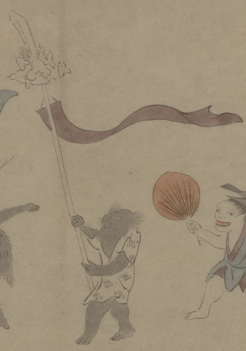

小豆色の幡を持った化物。肌は薄黒く、髪の毛はまばらに生えている。白い衣を着ている。腕脚は毛皮で覆われており、獣が変化したものとみられる。
出典：親書誌：U426_nichibunken_0150：付喪神絵詞；ツクモガミエコトバ／日付：2010／資源識別子：U426_nichibunken_0150_0050_0000
Copyright (c)2010- International Research Center for Japanese Studies, Kyoto, Japan. All rights reserved.